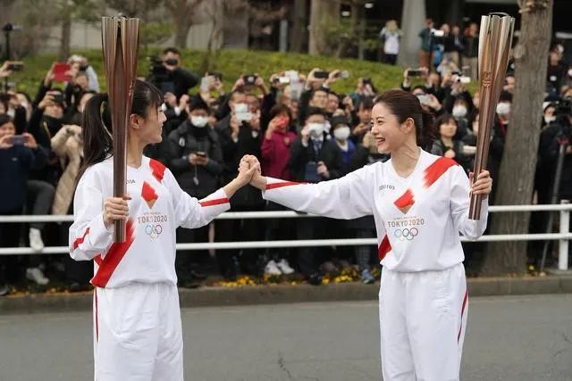
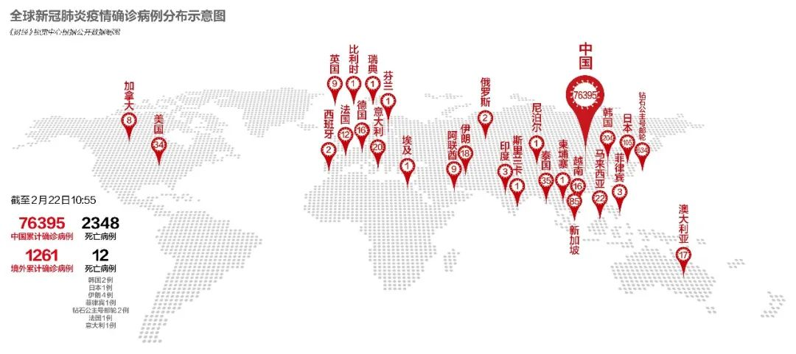

日本疫情升级！面临邮轮感染等多重冲击
原文链接 备份链接 澎湃新闻记者 刘栋 过去的这个周末，日本的新冠肺炎疫情开始出现一系列变化。 2月16日，日本首相安倍晋三紧急召开专家组会议。厚生劳动大臣加藤胜信在会后的记者会上表示，目前日本的新冠疫情“已经进入到一个新的阶段”。 “我 …

按照原计划，今年奥运圣火传递活动将在3月12日从希腊开始，3月26日来到日本，7月24日东京奥运会将开幕，这些安排会否受到影响，取决于日本政府对于疫情的控制

2020年2月15日，东京奥运会圣火传递大使石原里美（右）在彩排中与临时担任“火炬手”的工作人员握手相互鼓励。当日，东京奥组委在日本东京都羽村市举行奥运会火炬接力彩排。照片中，远处的观众大多数都戴起了口罩。图/新华
文 |《财经》记者 王晓枫
编辑 | 郝洲
新冠疫情会影响东京奥运会吗？“我认为会。”日本非营利组织医学治理研究所所长上昌广（Masahiro Kami）在回答《财经》记者问题时坦言情况不乐观。上昌广对新冠肺炎疫情在日本的快速传播深表担忧，他已经在《周刊文春》和《周刊新潮》等多家日本知名媒体发表文章批评日本政府当前的应对措施不力。
“大多数日本人都期待着奥运会的到来，但很难按计划举行。除日本外，大多数国家都对参加东京奥运会有犹豫。”上昌广悲观地说。
上昌广并非杞人忧天，截至当地时间2月21日晚，包括“钻石公主”号邮轮感染人数在内，日本共计737人确诊感染新冠病毒，3例死亡。截至2月20日，“钻石公主”号邮轮有634人确诊，这是中国大陆以外人数最多的聚集性感染。乘客中确诊感染新冠病毒的一名神奈川县87岁男性和一名东京都84岁女性被送往医疗机构后死亡。

“伦敦愿接手奥运会”
东京奥运会原定于今年7月24日开幕，按照原计划，日本方面要在年初进行一系列测试赛以确保场馆和营地正常运行。虽然此前出现零星新冠病毒感染个案，但这并不影响东京方面的筹备工作。然而，“钻石公主”号事件改变了事件走向。
鉴于疫情发展十分迅速，日本方面已经缩小了东京和名古屋这两场重要马拉松赛事规模，并取消一些小城市马拉松赛事。原定于下周举行的东京残奥会硬地滚球测试赛取消，这是第一个受疫情影响取消的奥运会及残奥会测试赛。
随着国际社会担忧情绪不断上升，英国伦敦保守党市长候选人肖恩·贝利（Shaun Bailey）甚至表示，如果新冠疫情迫使奥运会要更换举办国，那么伦敦愿意从东京手中接过承办权，举办这次体育盛事。
疫情的发展给东京奥运会组委会、日本政府和东京市政府造成很大困扰。面对外界担忧，国际奥委会和日本有关方面最近几个星期一再强调，不准备取消或者推迟东京奥运的举行。2月21日，日本内阁官房长官菅义伟在记者会上强调，东京奥运会和残奥会将如期举行。日本奥运大臣桥本圣子同时表示，3月26日开始的东京奥运会圣火也将照常进行。
日本方面筹备工作正在加紧推进，从2月下旬至4月仍将举办一系列比赛测试活动，为正赛积累病毒防控经验。在谈到日本是否会推迟或取消这些测试活动时，东京奥运会发言人高古正哲（Masa Takaya）连说五个“不”。他介绍说，第一阶段测试活动在本月进行，仅限于日本运动员参加。第二阶段测试活动计划在3月和4月举行，其中包括轮椅橄榄球和体操项目等。他强调，有些测试活动会进行调整，但肯定会进行。
对于疫情带来的压力，世界卫生组织（WHO）呼吁大家冷静，发言人塔里克·贾萨雷维奇 （Tarik Jasarevic）认为，目前没有证据表明在中国以外有社区感染状况，因此WHO目前不要求取消大型集会。
马里恩·库普曼斯（Marion Koopmans） 是WHO突发事件委员会成员。今年1月22日，WHO在日内瓦总部召开突发事件委员会会议讨论新冠肺炎疫情是否构成“国际关注的突发公共卫生事件”，库普曼斯就是在座的16名专家之一。
对于疫情是否会危及东京奥运会，库普曼斯对《财经》记者表示，虽然有媒体曾经引用她的话暗示东京奥运会有危险，但目前情况并非如此。我们需要等待，看看这种病毒是否通过中国以及其他国家和地区采取的防控措施得到控制。
“从长远来看，如果（这些措施）无法取得成功，我们可能会在世界其他地区看到更广泛传播。这是否会导致像旅行限制这样的措施，将取决于它有多严重。当我们看到来自中国的数据时，我们确实看到了疾病的严重性，但我们也知道，大多数病例（表现出的症状）是轻微的，我们目前只能推测近期事件的确切进程。” 库普曼斯说。
历史上还没有任何一届奥运会因为战争以外的原因而取消或延期。
保险界人士认为传染病将会是东京2020奥运会保险政策中一部分。按照惯例，奥运会组织方通常投保对冲门票销售亏损，而国际奥委会也会额外买保险为赞助商和广播收入方面可能的亏损保底。伦敦劳合社（Lloyd’s of London）一个主要承保商透露，通常来说，给奥运会买保险时，不会将传染病排除在承保范围外。
因此，从理论上来说，如果东京奥运因为新冠肺炎取消，相关条款就会被激活。对于保费，据劳合社估算，支付的费用可能相当于保额的1.5%至3%。鉴于东京2020组织方表示预算是97亿英镑，假设保费是保额的3%，投保成本就将是2.91亿英镑。
安倍政府面临信任危机
疫情给东京奥运会蒙上阴影的同时也让安倍政府面临巨大的信任危机，安倍内阁支持率一度跌至38%。朝日新闻社于2月15-16日进行全国民意调查，当被问及政府应对新冠肺炎对策时，50%受访者回答“不予好评”，“好评”只有34%。对于感染在日本扩大是否感到不安，回答“非常”与“某种程度”感到不安的受访者为85%。
45%的受访者认为日本政府针对钻石公主号的处理方式不恰当，造成病毒感染不断扩大。在应对钻石公主号问题上，日本政府面临内外压力，在过去两周时间里，日本政府在乘客权利与防止疫情扩散的两难抉择中艰难走钢丝，基于检疫法，为了实施检疫而要求乘客在船上观察健康状况14天，日本不允许未检疫人员下船。
然而，经过多日隔离后，随着船上环境逐渐变差以及感染人数快速上升，这一隔离政策遭到越来越多质疑，一些公共健康问题专家认为正是因为将如此众多乘客隔离在这样的密闭环境中，使得感染机会倍增。神户大学传染病学教授岩田健太郎（Kentaro Iwata）抨击船上隔离政策是最大失策，大错特错，非常可能发生二次感染。
对于日方举措，库普曼斯对《财经》记者表示，虽然并不了解钻石公主号船上具体情况，但依照惯例，隔离检疫可以阻止进一步传播，因此需要持续14天，直到最后一次接触患者或病毒来源……但检疫隔离不一定在船上，也可以在家里。
日本官员则捍卫海上隔离作法， WHO前西太平洋地区主任尾身茂（Shigeru Omi）就认为这对减少感染非常有效，因为多数感染都是在隔离措施开始前就已发生。
上昌广赞同尾身茂的说法，他的团队曾协助东京大学医科学研究所井元清哉教授合作研究2009年甲流在日本传播的轨迹，他们发现虽然在机场入境口岸设置检疫隔离有助于发现病例，但这些被发现的感染人员只是冰山一角，因为有潜伏期，事后统计数据证明入境检疫漏过大量病例，这说明这一措施有局限性，对于轮船同样如此。
日本政府检疫速度慢也备受诟病，虽然检验能力有限，但多日后才请求民间机构协助，直到隔离结束前一天才完成对所有乘客筛查。由于筛检缓慢，要确定感染是从何时开始，更是难上加难。“日本卫生部应该与私营企业合作，扩大病毒检测能力，而不是依赖已经超负荷运转的国家传染病研究所。”上昌广说。
不仅如此，由于日本政府让隔离结束后呈阴性的数百名乘客自行下船且可以乘坐公共交通工具回家，这一举动引发担忧，因为这些检测呈阴性的乘客是否在隔离期间被感染但仍处于病毒的潜伏期不可而知。美国、澳大利亚、加拿大和韩国表示，这些撤离乘客乘包机回国后将再进行两周隔离，其中一些是在军事基地，这表明这些国家不信任船上的隔离措施。
对于这些乘客是否会将病毒在日本国内传播开来，上昌广并不这么认为。因为虽然有些乘客可能在船上感染且没有任何感染迹象，但如果处理得当，这种携带病毒被感染的可能性似乎不大。
日本政府对于钻石公主号的应对也折射出日本官僚体制存在的问题。天普大学（Temple University）东京校区社会学教授基莱·克利夫兰（Kyle Cleveland）曾研究日本政府应对福岛核泄漏事故的反应。对比这两起事件，克利夫兰看到了令人不安的相似之处。在他看来，这说明日本的官僚机构危机管理存在很大问题，缺乏真正的专家负责决策协调有很大问题，因为这会让政府官员被置于他们能力之外的权威地位。
“日本有时是自身能力的受害者，这里一切运转良好，是一个在各方面都高度结构化、功能齐全的社会。当事情偏离轨道时，他们认为采取正常的日常流程就足够了，但特殊情况需要特殊的应对措施，”克利夫兰说。
“日本算是一个自然灾害非常多的国家，所以国民性格也比较特殊，目前看来大家没有感到那么恐慌。不过传染病跟地震、海啸、台风等不一样，我觉得还是需要某种恐惧，警惕心。所以我觉得岩田教授的警告很有意义。”日本知名媒体的一位驻华记者对《财经》记者表示。
该驻华记者认为，日本政府必须管控疫情，而不是能不能应对的问题，因为事关国民生命，要不然后果严重。在他看来，疫情也许会影响东京奥运会，“我个人觉得东京奥运也不是一定要准时开的。为了召开奥运而牺牲生命，也不合理吧。”
重点关注高风险人群
目前，日本疫情的发展是一方面出现重症患者死亡现象，另一方面则感染扩大但轻症较多。鉴于这种情况，日本政府将焦点对准重症化风险较高的人，在彻底预防老年人等高风险人群感染同时，构建能尽早发现发病患者进而优先给予治疗的机制。
厚生劳动省2月17日发布了发热等症状人士向咨询中心电话咨询的标准，其中列举了感冒症状和37.5度以上发热持续4天以上等症状。由于老年人和存在基础性疾病的人容易出现重症化的现象，这类人群症状持续2天左右便应电话咨询。
如果咨询中心认为有必要就诊，将介绍疑似人士前往设置有“归国者及接触者外来”门诊的专业医疗机构。设置专业门诊的医疗机构数量截至2月15日达到726个，厚生劳动省力争扩充至与2009年甲流爆发时800个左右的规模。后生劳动省还将专用病床增至约3400张，根据感染扩大情况，可能让重症者优先入院，而轻症者在自己家养病。
杜绝医院内感染是防止高风险人士被感染的关键，此次新冠肺炎爆发后，武汉出现多起医院内感染。在日本国内，和歌山县和神奈川县也发生疑似医护人员和患者相互感染的事例。冲绳县立中部医院传染内科首席专家高山义浩（Hiro Takayama）指出，如果感染在有100名入住者的设施内扩大，将有30人以上发病，数人死亡。
为了尽早发现高风险患者，厚生劳动省扩充接受病毒检测的人员范围，不仅限于中国旅行史或有相关接触，医生判断疑似感染情况也纳入检测范围。检测最初由国立传染病研究所和地方卫生研究所进行，每天可进行1500人左右，但由于人员和试剂不足，未能满负荷运转，目前在企业和大学协助下检测能力已提高至逾3000人。由于现阶段尚无新冠肺炎特效药，日本采取肺炎等对症疗法。厚生劳动省为临床试验提供研究费用，避免让患者个人承担。
目前日本政府正全力推进上述措施，确保控制疫情和避免影响东京奥运会。对于未来疫情走向，上昌广认为，日本不太可能成为第二个病毒传播中心，因为新冠病毒已经在东亚包括韩国、日本和台湾等在内的国家和地区传播。
奥运圣火传递活动将在3月12日从希腊开始，3月26日来到日本，这些标志性活动会否受到影响取决于日本政府对于疫情的控制。四年一届，从组织方到运动员，都为东京奥运会花费多年努力，正如世卫组织专家库普曼斯所言，全球疫情走向将决定这奥运会能否继续在正常轨道上运转。

▲点击图片查看更多疫情报道
责编 | 蒋丽 lijiang@caijing.com.cn
本文为《财经》杂志原创文章，未经授权不得转载或建立镜像。如需转载，请在文末留言申请并获取授权。
原文链接 备份链接 澎湃新闻记者 刘栋 过去的这个周末，日本的新冠肺炎疫情开始出现一系列变化。 2月16日，日本首相安倍晋三紧急召开专家组会议。厚生劳动大臣加藤胜信在会后的记者会上表示，目前日本的新冠疫情“已经进入到一个新的阶段”。 “我 …
原文链接 备份链接 日本国内新冠病毒感染者近日连续增多，一些地方相继报告了无法确定感染途径的病例。日本厚生劳动省昨天（17日）表示，停靠在日本横滨港的“钻石公主”号邮轮又新增了99名新冠肺炎病例，累计已达454例。鉴于形势日益严峻，日本 …
原文链接 备份链接 2月10日，日本东京，2020东京奥运会前瞻，奥运宣传标语亮相东京街头。图片来源：视觉中国 记者：高恺仪 “ 首例病逝确诊患者是一位80多岁的女性。鉴于在中国的经验，新冠肺炎病毒对有基础病的老年人造成的影响更大，老龄化 …
原文链接 备份链接 有时候半夜突然想到某个可能的漏洞，惊出一身冷汗。 记者 | 黄 祺 抗击新冠肺炎疫情的紧要关头，医院不能失守。 中国疾控中心2月17日的一份研究报告显示，全国已有3019名医务人员感染了新型冠状病毒，其中包括1716 …
原文链接 备份链接 图片来源：视觉中国 记者：罗盈盈 “ 这场体育盛会能否如期揭幕依然存在变数。 ” 新冠肺炎疫情在日本有愈演愈烈的趋势，原定今年7月揭幕的东京奥运会面临挑战。 2月21日，日本内阁官房长官菅义伟在记者会上强调，东京奥运会 …